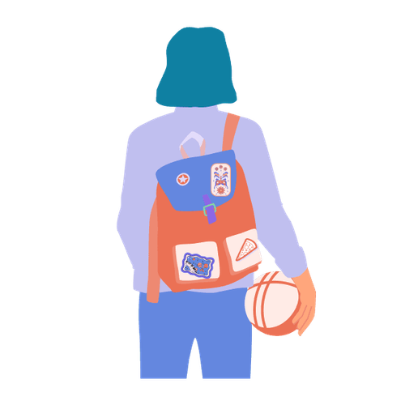

Mit der Academy erhaltet ihr im Business-Plan praxisnahe Lernmodule rund um Facilitation und wirksame Transformation.
Gemeinsam mit 9 Spaces zeigt Plan International Deutschland, wie wertebasiertes Arbeiten Orientierung gibt – nach innen wie nach außen.

Dieses Tool hilft euch dabei, individuelle Unterschiede und kulturelle Identitäten im Team zu erkunden und wertzuschätzen.
Dieses Tool hilft euch, gemeinsam im Team unsichtbare Arbeit zu identifizieren und explizit zu machen.
Dieses Tool hilft euch dabei, euer Level an Diversität und Inklusion einzuschätzen.
Dieses Tool hilft euch dabei, zu analysieren, ob eure Außenkommunikation die Realität eurer Teamzusammensetzung widerspiegelt.